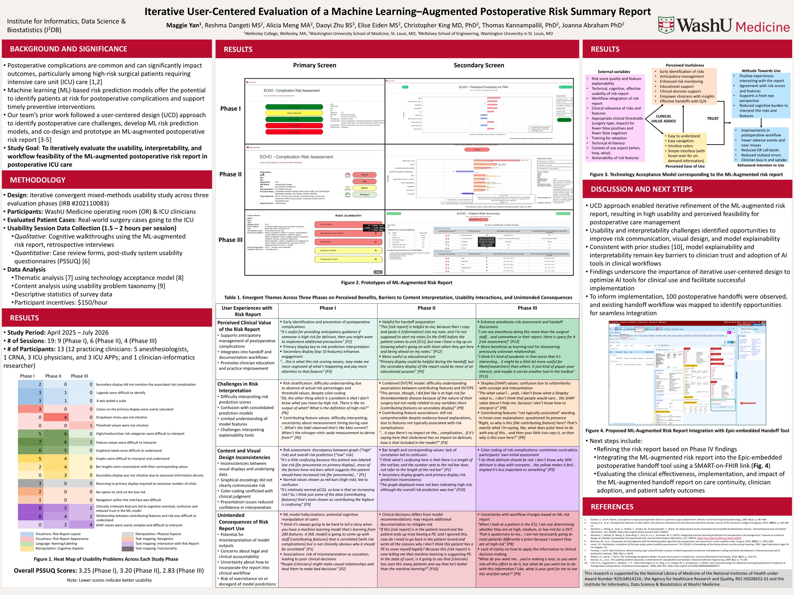

Iterative User-Centered Evaluation of a Machine Learning–Augmented Postoperative Risk Summary Report
Machine learning models can flag surgical patients at risk for complications like delirium, pneumonia, or blood clots, but only if clinicians can read the prediction, trust it, and act on it at the right moment. This summer I worked on a three-phase usability study of an ML-augmented risk report for postoperative ICU care, and observed how patients and their information are handed off from the operating room to the ICU, where the report would eventually live.
- My role
- Bioinformatics Research Intern, BIDS program. First author on the summer poster.
- Timeline
- Late May–July 2026 (the full study ran April 2025–July 2026)
- Lab
- SAFE-T Lab, Department of Anesthesiology, WashU Medicine · Institute for Informatics, Data Science & Biostatistics (I2DB)
- Methods
- Field observation of handoffs, open coding, cognitive walkthroughs, retrospective interviews, post-study usability questionnaires (PSSUQ), thematic analysis using the technology acceptance model, and content analysis using a usability problem taxonomy
- Participants
- 13 clinicians across 19 usability sessions
- Team
- PI: Joanna Abraham, PhD. With Reshma Dangeti, Alicia Meng, Daoyi Zhu, Elise Eiden, Christopher King, and Thomas Kannampallil.
- Tools
- e.g. Epic, Excel, HTML/CSS/JS
What were we trying to find out?
Is an ML-augmented postoperative risk report usable, interpretable, and feasible within real ICU workflows, and how should it change from one iteration to the next? Adapted from the study goal on our poster.
Why this mattered
Postoperative complications are common, and they hit hardest for high-risk surgical patients who go to the ICU. Machine learning models can identify who is at risk early enough to prevent some of those complications. The team’s earlier work used a user-centered design approach to understand postoperative care challenges, build risk prediction models, and co-design a prototype risk report.
A prediction only helps if it reaches the right clinician at the right moment. One of those moments is the handoff: when a patient leaves the operating room for the ICU, everything that happened in surgery, what’s running, and what to watch for next has to travel with them. So the work had two halves: understand the handoff as it happens today, and test whether clinicians can actually use the risk report.
How we approached it, and why
The evaluation was an iterative, convergent mixed-methods usability study across three phases, with OR and ICU clinicians at WashU Medicine reviewing real-world surgery cases headed to the ICU. Each session ran 1.5–2 hours. Note which of these you ran or analyzed yourself.
| Method | Why this method | What it gave us |
|---|---|---|
| Field observation of handoffs | To see how the OR-to-ICU handoff really works before asking anyone to add a new tool to it. | Field notes and timestamps from the end of surgery to ICU setup, and a map of the workflow. |
| Open coding of observation notes | To let themes come from what clinicians did and said, not from our assumptions. | Three themes: perceived usefulness, challenges, and suggestions for the Epic handoff tool. |
| Cognitive walkthroughs and retrospective interviews | To watch clinicians interpret the risk report on real cases and hear their reasoning out loud. | Where interpretation broke down, and why. |
| PSSUQ and case review forms | To track usability with a validated measure from phase to phase. | Usability scores for each phase. |
| Thematic and content analysis | To connect specific usability problems to whether clinicians would adopt the tool. | Emergent themes mapped onto the technology acceptance model, and a heat map of usability problems by phase. |
What I actually did
-
Watching the handoff
Late May–early July 2026For a quality improvement study of the Epic-embedded postoperative handoff tool, I arrived in the OR toward the end of surgeries, encouraged the anesthesia team to use the tool, and took timestamped notes as the team prepared the patient, transported them, and handed off to the ICU team. When ICU clinicians had a moment, I asked for their feedback on the tool. I also designed flyers to raise awareness of it.
-
Making sense of the notes
June 2026I transcribed handwritten notes into a spreadsheet and coded every sentence for statements about the report, and for barriers and facilitators in the handoff workflow. Patterns across codes became three themes: perceived usefulness of the report, challenges (with the workflow, the tool, and integrating it), and suggestions for improvement and implementation.
-
Presenting it as a website, not slides
July 2026For the mid-program presentation I built the site above, so people could trace a patient’s journey from the OR to the ICU and open the proposed additions to the workflow themselves.
-
Evaluating the ML risk report
July 2026In the third phase of the usability study, clinicians worked through handoff tasks with a more advanced version of the risk report while we observed and recorded. Your part in the walkthroughs and the analysis.
-
Pulling three phases together
Late July 2026We analyzed all three phases together and summarized the results in a poster at the end of the program. What you did for the analysis and the poster.
What we learned
Clinicians saw real value in the report
They described using it to anticipate complications, to prepare for handoffs and get ahead on notes, and as a teaching tool.
Interpretation was the biggest barrier
Risk categories without percentages or thresholds were hard to read, SHAP values were unfamiliar, and features that didn’t seem clinically relevant lowered trust in the model.
The visuals sometimes contradicted the data
Red bars on a patient labeled low risk, bar lengths that didn’t match their values, and color coding that disagreed with clinicians’ own judgment all caused confusion.
Trust has consequences beyond the screen
Clinicians worried that associations would be read as causes, about legal accountability when they disagree with the model, and about what they’re actually supposed to do with a risk score.
Usability improved across iterations: overall PSSUQ scores went from 3.25 in Phase I to 3.20 in Phase II and 2.83 in Phase III, where lower is better. Consistent with prior work, explainability and interpretability remained the key barriers to clinician trust and adoption.
Where it landed
I presented a poster on the study at the end of the BIDS summer program. To inform implementation, the team observed 100 postoperative handoffs and mapped the existing workflow to find where the report could fit, and proposed integrating the ML risk report into the Epic-embedded handoff tool through a SMART on FHIR link.
Next, the team plans to refine the report based on the latest findings, integrate it into the handoff tool, and evaluate its effect on care continuity, clinician adoption, and patient safety.

Open the full poster (PDF) ↗Looking back
What worked
e.g. seeing the handoff in person before evaluating the tool.
Limitations
e.g. a small number of participants and sessions per phase, one health system.
What I’d study next
The open question this left you with, e.g. how to explain a model’s reasoning to clinicians without SHAP values. This connects directly to your interest in trust and adoption of AI decision support.